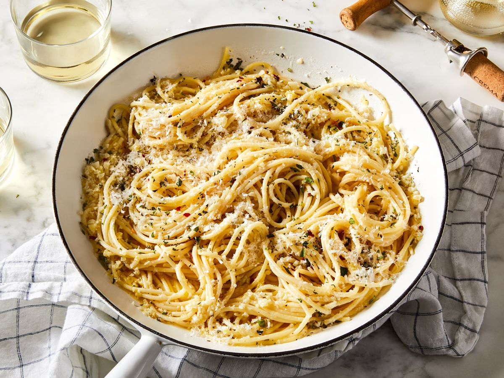

Home
Garlic Pasta

Description
Looking for a homemade alternative to boxed pasta that's just as quick and
easy? This stovetop garlic pasta uses staple ingredients and comes
together in just 30 minutes. You'll want to bookmark this recipe for busy
weeknights. The good news is, it's so simple that once you make it a
couple times, you'll likely have it memorized.
Ingredients
- 2 teaspoons olive oil
- 4 garlic cloves, minced
- 2 tablespoons butter
- 3 cups chicken broth, or more as needed
- ½ teaspoon ground black pepper
- ¼ teaspoon salt
- ½ pound spaghetti
- 1 cup grated Parmesan cheese
- ¾ cup heavy cream
- 1 ½ tablespoons dried parsley
Steps
-
Heat olive oil in a medium pan over medium heat. Add garlic and stir
until fragrant, 1 to 2 minutes. Add butter and stir constantly until
melted. Pour in 3 cups chicken broth; add pepper and salt. Bring to a
boil.
-
Add spaghetti and cook, stirring occasionally, until tender yet firm to
the bite, about 12 minutes. Add more chicken broth if pasta starts to
stick to the pan.
-
Add Parmesan cheese, cream, and parsley and mix until thoroughly
combined. Serve immediately.
Head to top